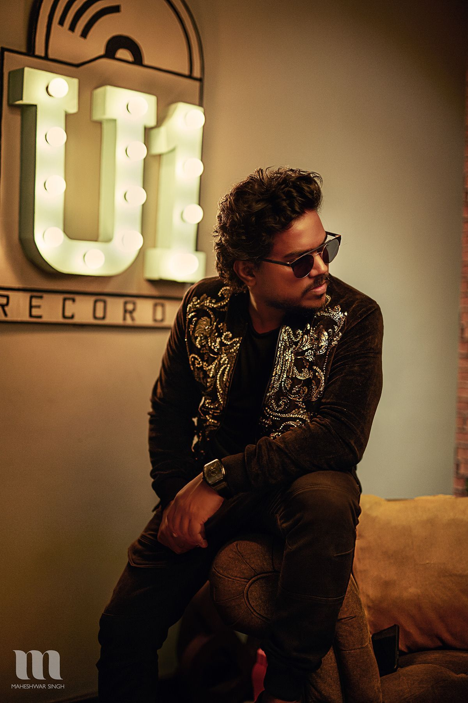

MUSIC BRINGS LIFE SWEET MUSIC HERO YUVAN SHANKAR RAJA
"Yuvan Shankar Raja" was born on 31 August 1979.
He is the third and youngest child of musician and film composer Ilaiyaraaja.
He is the younger brother of music director Karthik Raja and playback singer-music director Bhavatharini.
Yuvan once confessed that his brother Karthik Raja was more talented than him, but he did not get a successful break into the music business since he did not get a "good team to work"began his musical career in 1996, at the age of 16, when he composed the film score for Aravindhan.
He is known as the "King of BGM" in indian music industry and is well known for his background scores in Mankatha , billa , AAA , Pudhupettai.
YUVAN SHANKAR RAJA
View pic of U1 Yuvan Shankar Raja launched his own music label, U1 Records, and public YouTube page in 2015.
The label has associated itself with film soundtrack albums and singles by independent artists
Yuvan launched the website for U1 Records on 10 February 2021, in order to facilitate independent talents to reach the label to show their talent to the world along with exclusive news and pictures.
More records